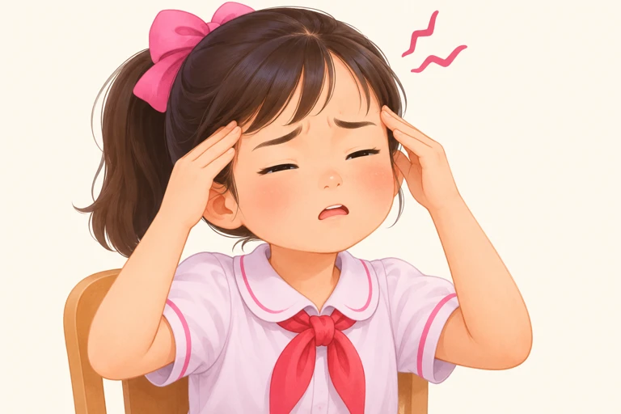

toothache
đau răng
TOOTHACHE
I have a toothache.
Chưa đánh dấu
Unit 15 · Học trước, thử nhớ rồi luyện đề
Học từ để nói khi không khỏe và luyện hội thoại hỏi thăm. Đây là bài tiếng Anh; khi không khỏe, báo người lớn và không tự dùng thuốc.
Unit 15 có âm thanh đi kèm (giọng máy Anh Mỹ). Em có thể nghe dù máy chưa cài giọng Anh. Nếu lỗi mạng, bấm nghe lại hoặc chọn giọng thiết bị nếu có.
Bấm Nghe khi em sẵn sàng. Trang không tự phát âm thanh.
Nghe cả từ/cụm, đọc theo rồi dùng ABC để nhớ cách viết. ABC đọc tên chữ cái, không phải bài luyện âm. Với cụm nhiều từ, các nhóm chữ được tách riêng.
Chưa có từ cần ôn. Em chọn một nhóm rồi bấm “Cần ôn lại” ở từ muốn luyện thêm nhé.
đau răng
I have a toothache.
Chưa đánh dấu

đau đầu
I have a headache.
Chưa đánh dấu

đau họng
I have a sore throat.
Chưa đánh dấu

đau bụng
I have a stomach ache.
Chưa đánh dấu
đến nha sĩ
In the role-play, the partner says: You should go to the dentist.
Chưa đánh dấu
nghỉ ngơi
In the role-play, the partner says: You should have a rest.
Chưa đánh dấu
uống nước ấm
Our card says: You should drink warm water.
Chưa đánh dấu
đến bác sĩ
Our card says: You should go to the doctor.
Chưa đánh dấu
uống/dùng thuốc
Take some medicine is a phrase in our English lesson. Ask an adult for help.
Chưa đánh dấu
súc miệng bằng nước muối
We read the phrase rinse your mouth with salt water in our English lesson.
Chưa đánh dấu
nên
What should I do?
Chưa đánh dấu
không nên
The card says: You should not watch too much TV.
Chưa đánh dấu
lời khuyên
Thanks for your advice.
Chưa đánh dấu
mình cảm thấy không khỏe
I do not feel well. I will tell an adult.
Chưa đánh dấu
có chuyện gì/vấn đề gì vậy
What is the matter?
Chưa đánh dấu
cảm ơn lời khuyên của bạn
Thanks for your advice. You are welcome.
Chưa đánh dấu
Nghe hội thoại rồi đọc theo. “Đến lượt em” chỉ đọc A để em nói câu trả lời của B.
A: What is the matter?
B: I have a headache.
I have a + vấn đề sức khỏe; không dùng I am a headache.
A: Are you OK?
B: I do not feel well. I have a sore throat.
Do not feel well = không cảm thấy khỏe.
A: What should I do?
B: Our role-play card says: You should go to the dentist.
Should + go nguyên mẫu; đọc đúng thẻ, không tự chọn cách chữa.
A: What does our role-play card say?
B: You should have a rest.
Sau should dùng have, không dùng has.
A: Thanks for your advice.
B: You are welcome.
Đáp lời cảm ơn lịch sự.
A: What is the negative line on our card?
B: You should not watch too much TV.
Should not = shouldn’t; giữ watch nguyên mẫu.
Ví dụ tự soạn. Vị trí và sở thích là giả định theo từng ví dụ. Trang không thu âm hoặc tự chấm giọng của em.
Mỗi nhóm có bốn bài nhỏ, không giới hạn thời gian. Em được sửa rồi thử lại. Câu trả lời tự lưu để quay lại làm tiếp.